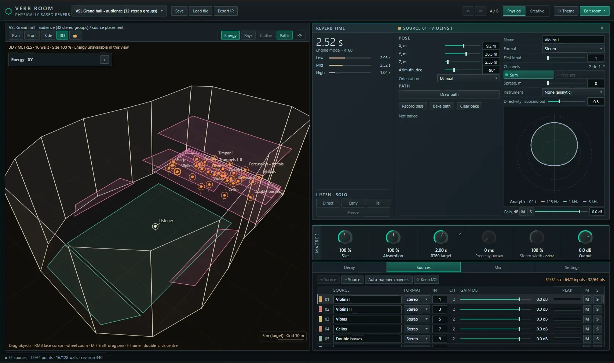
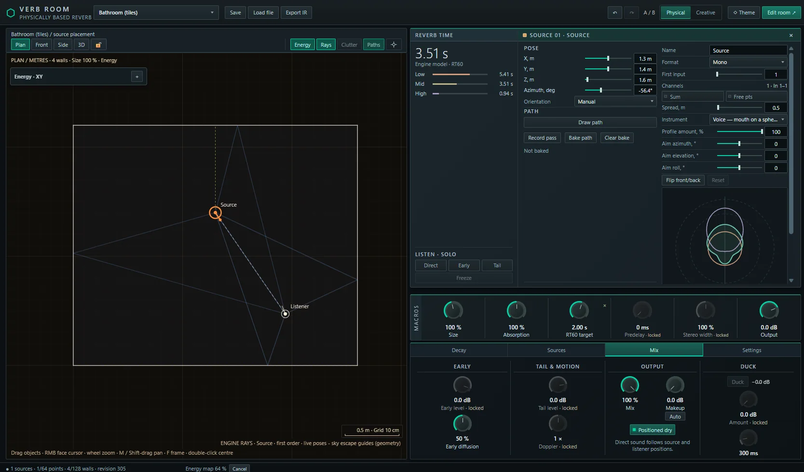
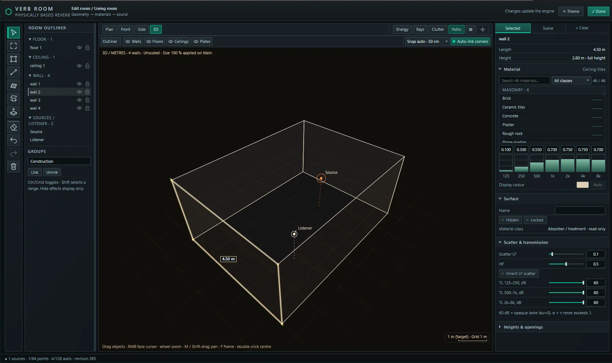
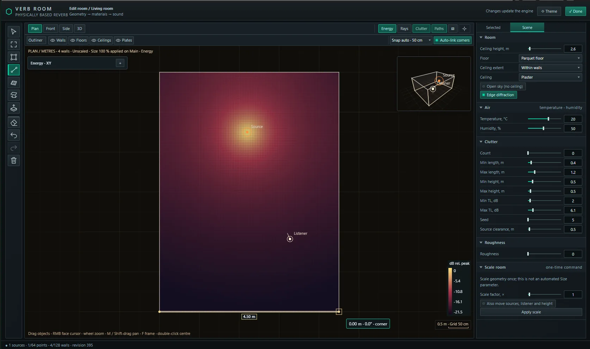
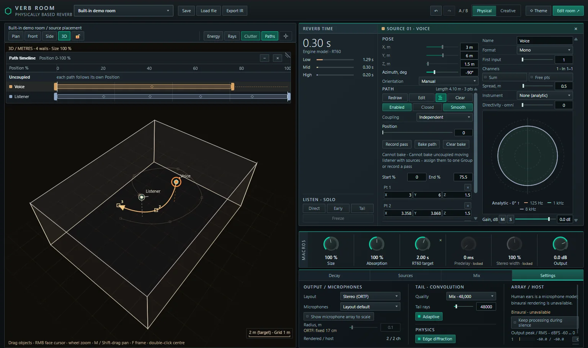

Set the walls, floor and ceiling zones, and horizontal plates. Choose how surfaces absorb, scatter, and transmit sound.
02
Place sources and the listener
Route dry tracks to sources and position the listener where you want to hear the scene.
03
Set them moving
Draw a path for a source or the listener and automate its position in your DAW.
04
Bake and play
Precompute the late tail along the path. Baked tables reload with presets and DAW sessions.
Inside the room model
The hybrid engine calculates early reflections with the image-source method, estimates the late tail with ray tracing, and plays it back through convolution.
Image-source early reflections
Ray-traced tail
7 octave bands
AmbiX 1–3
Automatable positions
Baked paths
Physical and Creative modes
Physical plays the room as modeled. Creative unlocks controls such as pre-delay, stereo width, ducking, and Freeze.
Surround and AmbiX
Listener layouts include mono, stereo, 5.1, 7.1, and 7.1.4, plus first-, second-, and third-order AmbiX (4, 9, and 16 output channels, ACN/SN3D). In REAPER, use 4, 10, or 16 track channels for AmbiX.
See where reflections go
Inspect reflection paths in the viewport, compare decay across seven octave bands, or view the modeled energy on a horizontal slice.
Share the whole setup
Save room geometry, materials, source routing, and mix settings in a .verbroom preset. Enable Keep I/O to preserve your current source setup and output configuration when importing.
Inside the plug-in

Verb Room with the VSL Grand Hall — Audience preset: 32 stereo source groups and one listener.

Plan view with first-order reflection rays, and the Mix page.

Edit room: a selected wall with its material and absorption by octave band.

Edit room: the modeled energy of a small room on a horizontal slice.

A source path with the path timeline.
Details that shape the room
Room clutter
Empty roomSame room with clutter
Clutter adds furniture-like obstacles that change reflection paths and the late tail. Set the count, minimum and maximum length, height, and transmission loss, plus clearance around sources and the listener. The same seed and scene settings reproduce the layout in either Physical or Creative.
Give dialogue or a close-miked track the reflections of a furnished room.
Source directivity
Illustration · Same pattern, different aim
Choose an analytic pattern such as omni or subcardioid, or use the built-in voice and speaker measurements to model how sound radiates in different directions (CC BY 4.0 credits). Inspect the polar plot, set profile amount and aim (azimuth, elevation, and roll), or flip front and back. The bundle excludes instrument measurements for licensing reasons, so convert your own data with verbdir_tool and import it with the source’s Load .verbdir file… command.
Profiles affect direct sound and early reflections. The late tail treats each source as omnidirectional.
Aim a speaker across the room or turn a voice away from the listener.
Air absorption
Illustration · With distance, the high band (solid) loses more level than the low band (dashed)
In the Scene panel, Air sets temperature (°C) and relative humidity (%). The engine calculates air absorption in seven octave bands from 125 Hz to 8 kHz, accounting for high-frequency loss as sound travels farther.
Account for high-frequency loss on long paths through a hall or across a set.
Customize the interface
Illustration · Amber, Ice blue, and Classic emerald viewport palettes
In Theme, set the window accent, background tint and strength, and choose viewport presets or colors for individual elements. You can also choose the energy-map palette or color surfaces by material class. Mouse-wheel value changes are off by default, but Alt+wheel still adjusts values.
Make sources and reflection paths easy to pick out in a busy scene.
What is different from other reverbs
Comparison of typical reverb approaches
Aspect
Algorithmic reverb
Convolution reverb
Verb Room
Where the sound comes from
Algorithmic reverbA designed network of delays
Convolution reverbAn impulse response captured in a space
Verb RoomA simulation of the room you drew
Source and listener positions
Algorithmic reverbPan, width, and distance controls
Convolution reverbPositions fixed in each captured response
Verb RoomPer-source positions and listener position in the model, with automation
Many sources in one space
Algorithmic reverbThe same reverb response for each source
Convolution reverbThe same impulse response for each source
Verb RoomEach source has its own reflections and contribution to the tail
Obstacles, doors, and adjacent rooms
Algorithmic reverbOutside the typical delay-network model
Convolution reverbAcoustics captured in the impulse response
Verb RoomModels occlusion, transmission, and diffraction
Changing the room
Algorithmic reverbAdjust reverb controls
Convolution reverbLoad a different impulse response
Verb RoomMove a wall or change a material
Movement
Algorithmic reverbOutside the typical delay-network model
Convolution reverbEach captured response holds its positions fixed
Verb RoomPaths follow movement with physical Doppler
Physical plays the room as modeled and locks the creative overrides. Creative unlocks decay by band, early and tail levels, size, pre-delay, width, ducking, and Freeze.
Verb Room shows what it computes with reflection paths in the viewport, decay curves by band, and an energy map of the room.
A source in motion
Watch a source follow a path through a room in a silent, 20-second real-time capture.
The video connects to YouTube after you press play. If the player shows an error, open the video on YouTube.
Hear the room
Compare the dry and processed versions of each demo. Headphones recommended.
Orchestra in a hall
Hear a short orchestral sketch dry and then processed in Verb Room’s Symphony Hall preset, from a listener seat in the audience.
0:00 / –:––
Dry
With Verb Room
A voice walking through a room
Compare the dry voice with the sound of a moving source in Verb Room. The processed take was recorded with a drawn path. The voice is synthetic, generated with ElevenLabs.
0:00 / –:––
Dry
With Verb Room
One hall, two perspectives
Play the same dry orchestral passage through the two included VSL Grand Hall presets. Both use the same original model of the hall.
Audience
Hear the stage from a seat in the hall.
Conductor
Hear the same sections from the podium.
Turn off Keep I/O, configure 64 input channels and the corresponding DAW sends, then load a preset from the Presets folder to restore all 32 stereo groups. Bring your own instruments, samples, and any instrument directivity profiles you want to import.
For a smaller session, start with the built-in Chamber Hall and try moving the listener while a dry source plays.
Download Verb Room 0.2.2
Windows x64 and macOS Universal. Pay what you want, including zero. Payments support development.
Windows 10 or 11, a 64-bit VST3 host, and a CPU with AVX2 and FMA for the default build. The new interface uses WebView2 Runtime. If it is missing, Verb Room opens the classic editor. The source build instructions and portable build notes explain the build option -DVERB_AVX2=OFF.
Save your work, close the DAW, and extract the ZIP.
Copy the entire Verb Room.vst3 folder to C:\Program Files\Common Files\VST3\.
Reopen the DAW and rescan VST3 plug-ins if needed.
macOS Universal
Apple silicon or Intel, a VST3 host, and macOS 11 with current Safari/WebKit updates. macOS 12 or newer is recommended for the new interface. The bundle is ad-hoc signed and not notarized.
Save your work, close the DAW, and extract the ZIP.
Copy the whole Verb Room.vst3 bundle to ~/Library/Audio/Plug-Ins/VST3/ for your account or /Library/Audio/Plug-Ins/VST3/ for all users.
If macOS blocks the verified download, try right-clicking the bundle in Finder and choosing Open if Finder offers it. You can also remove quarantine from this bundle in Terminal. Adjust the path if you installed it for all users.
Reopen the DAW and rescan VST3 plug-ins if needed. If the new interface fails to start, try the classic editor via Theme or launch the host with VERB_UI=classic.
Verb Room is free to download, and it will stay free to try. I build it alone, in Ukraine, and the tools and time behind it are a real cost for me. If the plugin is useful to you and you’d like to see it grow, a contribution of any size helps me keep working on it: more stable releases, macOS testing, new features, and better documentation.
Not able or not ready to pay? That is completely fine. Testing it, sending a bug report, or telling another sound designer about it helps just as much. Thank you for trying Verb Room.
Verb Room is alpha software. Windows is the platform tested in REAPER. Automated performance checks cover multi-source scenes. Live listening and performance on older four-core systems remain open.
Version 0.2.0 was tested on a real Mac by a community tester; 0.2.1 and 0.2.2 have yet to be tested on a Mac. When the macOS editor has focus, click outside it to use host shortcuts the editor does not handle. This release has no Linux package.
Geometry is 2.5D: vertical walls and horizontal floors, ceilings, and plates. The model covers geometric acoustics without low-frequency room modes. The tail is a statistical estimate.
Large scenes can be CPU-intensive, especially with third-order AmbiX in Creative mode. Try Physical mode for large sessions. A large-scene path bake can take about 1–2 minutes depending on the scene, CPU, and system load.
Existing presets, scenes, and projects still load. Moving objects in Manual mode with tables baked in an earlier build may need one fresh Bake path. Tables baked in 0.2.0 still require a fresh bake.
What changed in 0.2.2
Path baking. Bake finishes after room edits with the host transport stopped, and the banner shows what it’s waiting for. The baked tail keeps playing during manual azimuth changes on linked path groups and recorded passes. Recorded-pass baking works independently of host buffer size.
Room editing. With Auto-link enabled, moving an entire wall also moves the joined ends of adjacent walls. Clutter has a Randomize button for its seed.
Path tools. New tooltips cover Bake path, Record pass, Clear bake, and Manual orientation. After Record pass, press Bake path to compute the table.
Sources. Use Σ on a multichannel source or run All formats… and Sum for all sources. Each bulk action takes one Undo, and the list keeps its scroll position after edits.
Verb Room is open source under the GNU Affero General Public License v3.0 and uses JUCE 8 under its AGPLv3 option. Built-in measured voice and speaker directivity profiles are attributed under CC BY 4.0. No non-commercial or unlicensed measured datasets are bundled.
Tell us your OS, CPU, DAW version, and scene or preset when filing an issue. Mac host tests, reports from other DAWs, and large-scene CPU observations from four-core machines are especially welcome.